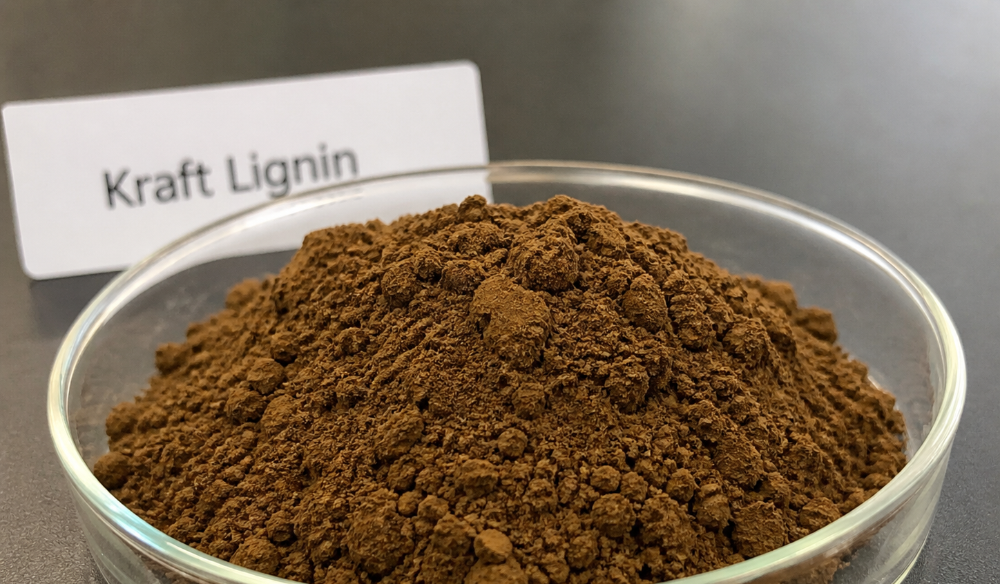
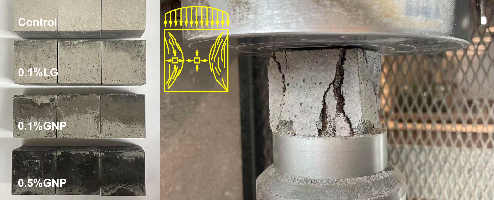
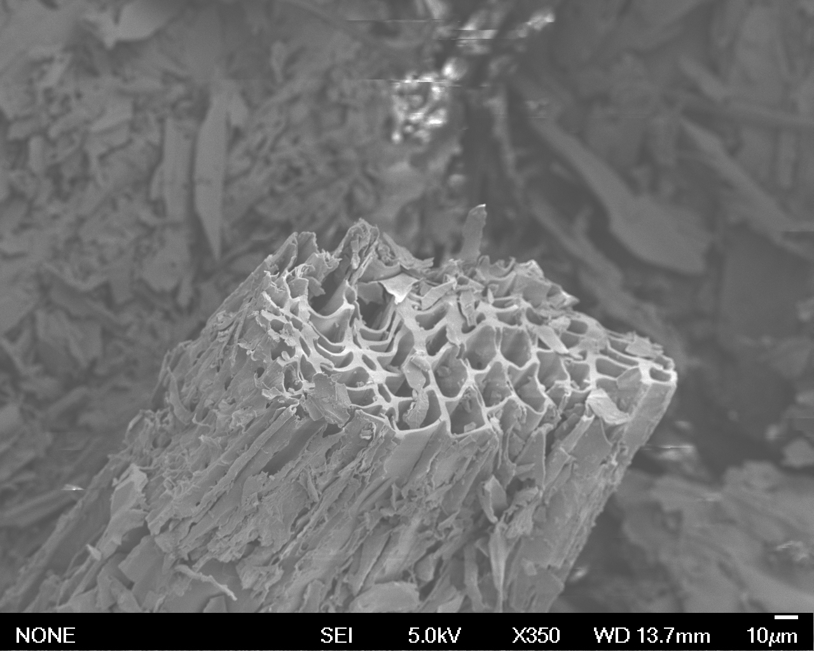
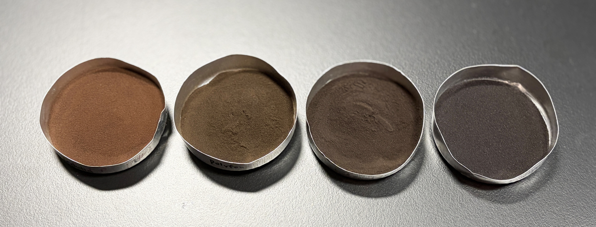

Hi!
I am currently a
Postdoctoral Researcher
at Auburn University's
College of Forestry, Wildlife, and Environment,
working at the
Forest Products Development Center
with Dr. Yucheng Peng.
My current research involves
utilizing biomass-derived materials for petroleum-based asphalt binders to
sustainable pavement materials, exploring biochar-based adsorbents for the removal of
per- and polyfluoroalkyl substance (PFAS) from contaminated water
.
My academic journey has been interdisciplinary.
I began my bachelor's degree in
Industrial Design
at Southwest Petroleum University,
where I developed strong interests in product design
thinking and visual communication.
I then continued my graduate studies in
Furniture Design and Engineering,
which strengthened my understanding of materials,
structure, and product systems.
I received my Ph.D. in
Sustainable Bioproducts
at Mississippi State University in May 2026,
where my research focused on the high-value
utilization of biomass resources,
sustainable materials, and value-added
applications of wood-based resources.
My doctoral research focused on the
synthesis of lignin-derived graphene materials
and
their applications in reinforcing cementitious construction
materials
.
Please feel free to explore my
projects
,
publications
,
and
CV
to know more about my academic background,
research experience, and ongoing work.
I am happy to discuss research,
collaborations, or other opportunities to connect
(
get in touch
)!
Research Projects

06/2023 - 05/2025
Lignin valorization to graphene-like structure
This project focuses on the continued
optimization of patented Fe-catalyzed lignin-derived graphene
structures using Cu as catalyst.
This project supported the development
of a sustainable and cost-effective
pathway for producing biomass-derived
carbon nanomaterials.
View project

01/2025 - 05/2026
Lignin-derived graphene application
in cement-based materials
This project focuses on Kraft lignin as a renewable carbon feedstock
for graphene-based additives in cement-based composites. The
observations suggest that lignin-derived graphene as a sustainable
nano-reinforcement for enhancing the compressive strength of masonry blocks.
View project

11/2024 - 05/2025
nZVI-impregnated biochar composites as adsorbent for heavy metal removal
This project investigates the development of nanoscale zero-valent
iron (nZVI)-impregnated biochar composites for heavy metal removal
from water. It focuses on how biochar properties, iron loading,
and thermal treatment conditions influence the formation and
distribution of nZVI particles and their associated Cu
removal performance.
View project

07/2026 - Present
Lignin-modified asphalt binders for
sustainable pavement materials
This project investigates the partial
replacement of petroleum-based asphalt
binders with lignin.
Through rheological and chemical
characterization, it evaluates the effects
of lignin type and dosage on binder
performance and aging behavior,
supporting the development of more
sustainable pavement materials.
View project

Research in Development
Biochar-based adsorbents for
PFAS removal from water
This research explores the potential
of biochar-based adsorbents for removing
per- and polyfluoroalkyl substances
(PFAS) from contaminated water.
It focuses on understanding how
biochar characteristics and surface
modification influence adsorption behavior,
with the goal of developing sustainable
and cost-effective water treatment materials.
View project
Publications
Journal Articles
-
Guo, S.; Yan, Q.; Kim, Y.;
Mlsna, T.; Street, J. T.; Cai, Z.; Zhang, J.
Formation mechanism of few-layer graphene
adjacent to nanoscale zero-valent copper
nanoparticles synthesized using kraft lignin
as a sustainable aromatic-rich carbon resource.
Journal of Materials Chemistry A
2026, 14 (55), 37991–38001.
[DOI]
-
Guo, S.; Yan, Q.; Cai, Z.;
Zhang, J.; Peng, Y.
Catalytic Transformation of Biomass:
From Waste to Fuels, Chemicals,
and High-Value Products.
Catalysts
2026, 16 (9), 796.
[DOI]
Work in Progress
-
Hydration and strength evolution of
cement-based composites incorporating
renewable lignin-derived biochar-supported
few-layer graphene nanomaterials.
-
Lignin as a partial asphalt binder replacement:
rheological performance and aging response.
-
Evaluating FTIR spectral processing methods
for oxidative aging characterization of
lignin-modified asphalt binders.
-
Influence of lignin-derived graphene
nanomaterials on early-stage hydration
in cement composites.